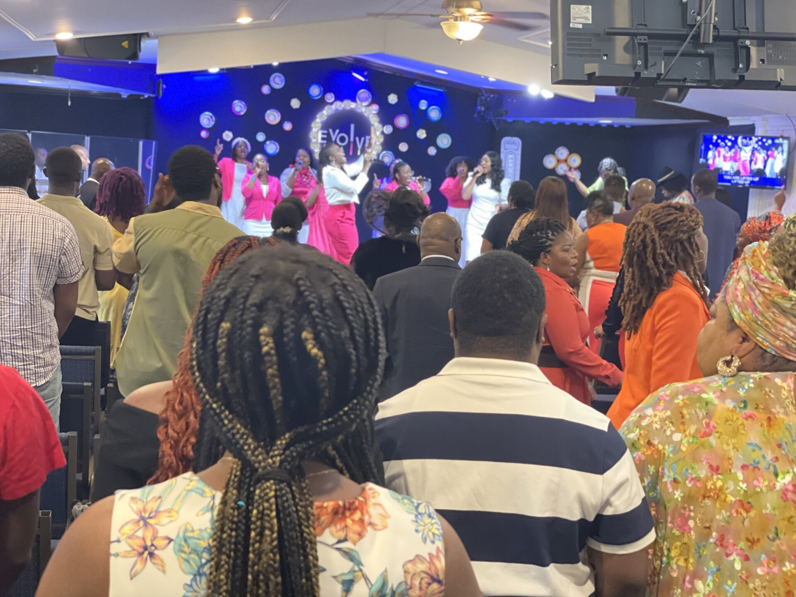
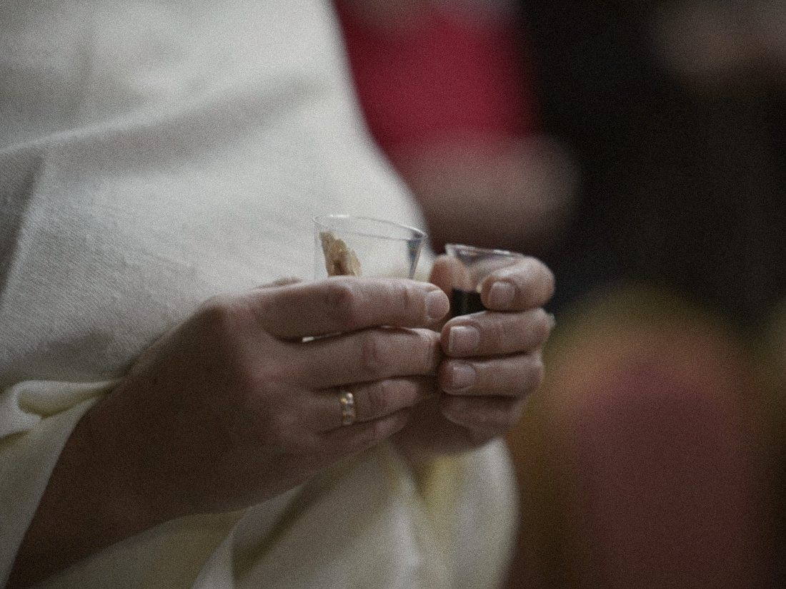
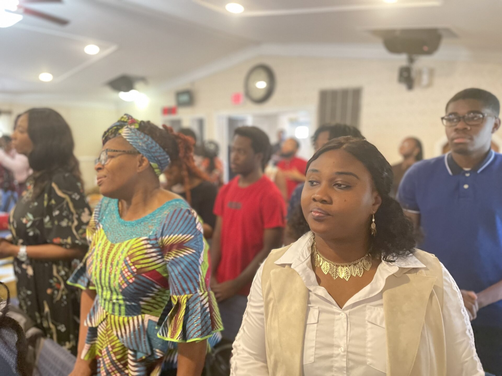
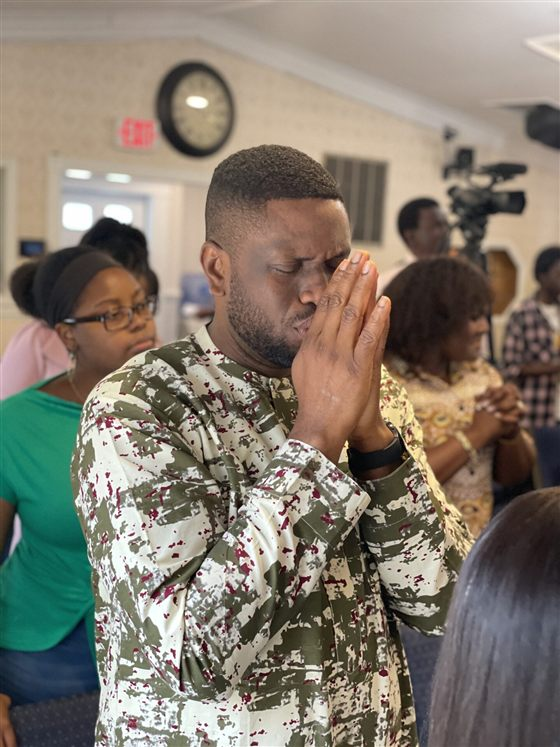
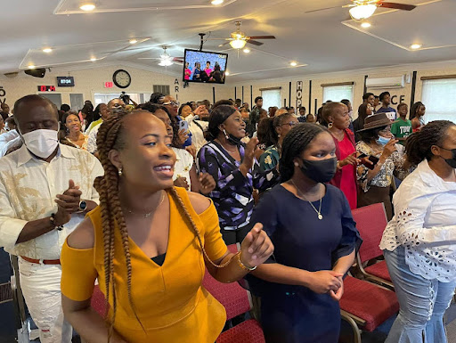
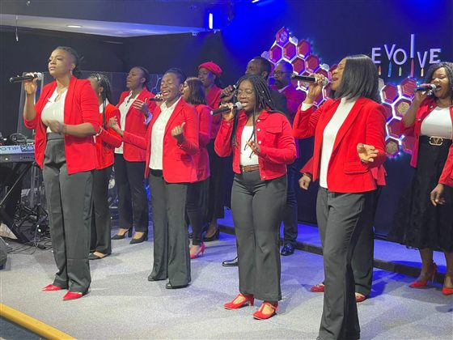
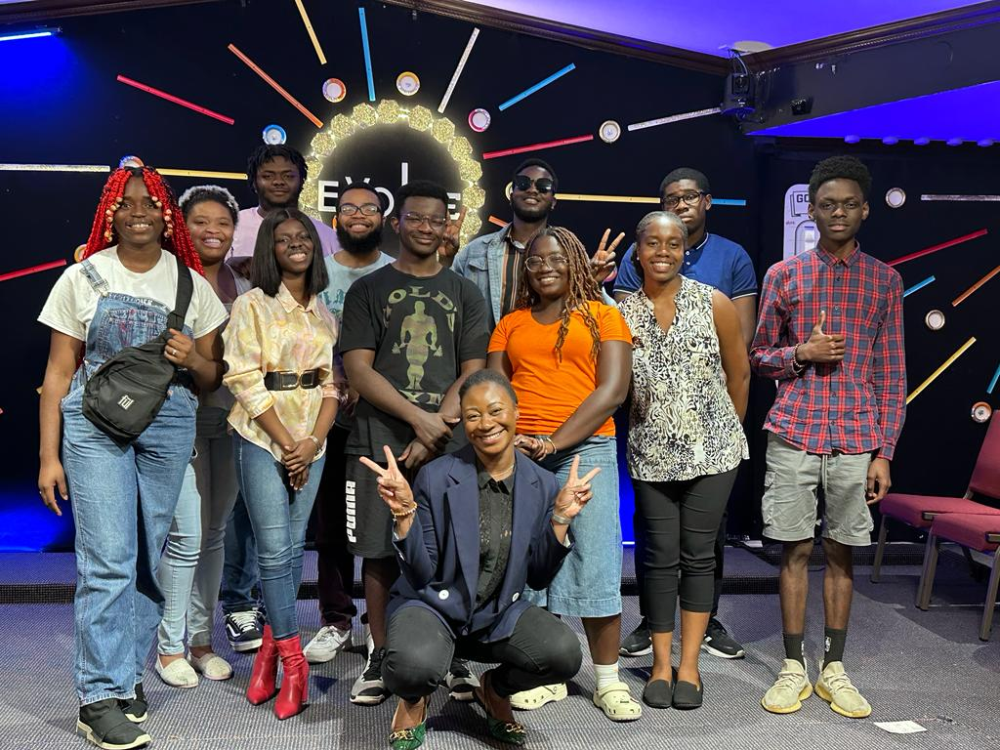
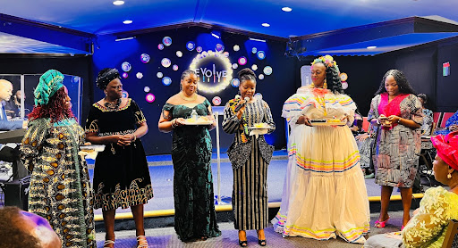
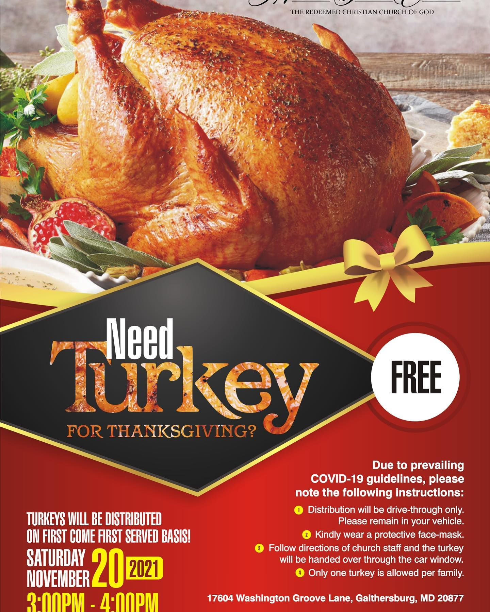
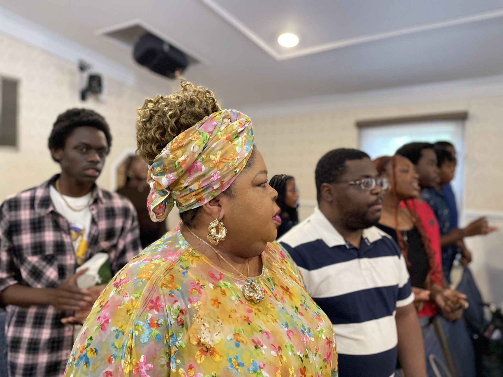

Every Sunday
10:00 AM
Sunday Service
Main auditorium & streamed live
A vibrant community, offering faith, love, hope and a wide range of resources, events, and uplifting messages
Through worship, the Word and prayer, experience God in a way that transforms every area of your life.
Whoever you are and wherever you’re from, you’ll find a warm welcome and a church family ready to walk with you.
We’re excited to welcome you to attend our in-person Worship Services, or you can join us online.

Main auditorium & streamed live
A Lifestyle of Word · on Zoom

“…and when I see the blood”
Midweek prayer on the prayer line
Praying for our children · virtual

Giving Thanks together
Visiting a new church should feel exciting, not overwhelming! Whether you’re exploring faith, looking for a church family, or simply visiting for the first time, we’d love to welcome you to Mercy Seat Chapel.
Come as you are and experience uplifting worship, genuine fellowship, and a community where you can feel at home. Ready to join us? Plan your visit today, and if you need transportation, we’re here to help you explore available options.



Mercy Seat Chapel Teen Ministry main purpose is to ground our young teenagers in the way of the Lord, mold new leaders and help bring out the talents that God has placed in them.
Explore Children & TeensREVIVE is an integral part of the body of Mercy Seat Chapel that focuses on young adults singles. We provide a safe place where young adults can serve freely, train leaders, learn and grow in Christ, learn humility in God, self respect and self worth.
Explore Revive
The Pillars of Mercy, the women’s ministry-arm of Mercy Seat Chapel, was established with a vision of bringing women together for a godly purpose that includes service, edification for spiritual growth, empowerment, and positive influence in the community.
Explore Pillars of Mercy
The FundaMENtals, the men’s ministry branch of Mercy Seat Chapel, was driven by a vision to bring men together for a noble purpose encompassing service, spiritual growth, empowerment, and positive community influence.
Explore FundaMENtalsEmpowering God’s children for growth, development and excellence. The mission of the Empowerment Ministry is to seek and connect Mercy Seat family members to educational, job, professional, business and networking opportunities.
Explore EmpowermentCatch up on recent services and messages from Mercy Seat Chapel.
The outreach arm of the church that helps Mercy Seat Chapel spread God’s word and share His love with the community and the world at large.
Planting smiles on the faces of so many children within the community at Christmas.
Read More
Sharing the joy of Thanksgiving with families across our community.
Read MoreVisiting seniors in assisted living monthly for fellowship, the Word and prayer.
Read MoreWhatever your stage or season, there’s a next step for you at Mercy Seat Chapel.
Partner with us as we reach our community and the world for Christ.
Give now CelebrateShare what God has done in your life and encourage someone today.
Share a testimony
PrayerLet us stand with you in prayer. Send us your prayer request.
Send a prayer requestWatch services live, catch up on sermons, send a prayer request, give securely and never miss an event, all in one simple app.
Free for iPhone and Android